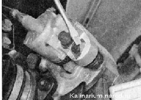
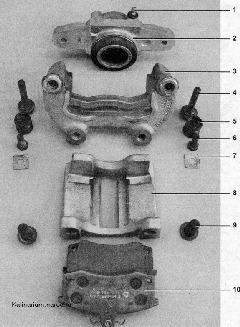
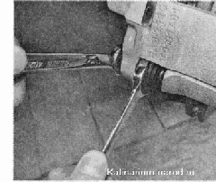
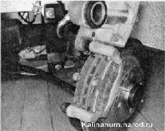

Передние тормозные колодки - замена
ПЕРЕДНИЙ ТОРМОЗНОЙ МЕХАНИЗМ
Передний тормозной механизм дисковый, невентилируемый, с плавающей скобой и одним рабочим цилиндром. Тормозной диск чугунный, его минимально допустимая толщина при износе составляет 17,8 мм. Зазор между тормозными колодками и диском поддерживается за счет упругости резинового уплотнительного кольца, установленного в проточке стенки рабочего цилиндра. В зависимости от комплектации, возможна установка внутренней тормозной колодки с датчиком износа.
Для замены колодок сдатчиками износа отсоединяем наконечник провода датчика от колодки жгута проводов.
Для выполнения работы потребуются:
— надежная подставка под автомобиль;
— небольшая металлическая щетка.
Снятие
1. Подготавливаем автомобиль к проведению работы.
2. Снимаем передние колеса.
3. Очищаем от грязи бачок главного тормозного цилиндра. Снимаем крышку бачка.
4. Очищаем тормозной механизм от грязи.
5. Через смотровое отверстие в плавающей скобе суппорта немного раздвигаем тормозные колодки так, чтобы они отошли от тормозного диска на максимально возможное расстояние.
6. Шлицевой отверткой отгибаем угол стопорной пластины болта нижнего направляющего пальца.


Детали суппорта переднего тормозного механизма: 1 — штуцер прокачки: 2 — рабочий цилиндр; 3 — неподвижная скоба суппорта; 4 - направляющий палец подвижной скобы; 5 — защитный чехол направляющего пальца; 6 — болт направляющего пальца; 7 — стопорная пластина; 8 — подвижная скоба суппорта; 9 — болт крепления рабочего цилиндра к подвижной скобе; 10 — тормозные колодки
7. Вынимаем тормозной шланг из кронштейна стойки (см. «Передний тормозной шланг — замена»).
8. Удерживая от вращения направляющий палец рожковым ключом на 17 мм, ключом на 13 мм выворачиваем его болт.

9. Поднимаем подвижную скобу вверх, поворачивая ее на верхнем направляющем пальце.

10. Снимаем тормозные колодки.
11. Небольшой металлической щеткой очищаем от грязи и ржавчины посадочные места колодок.
12. Убеждаемся в отсутствии подтекания тормозной жидкости из под манжеты тормозного цилиндра.
|